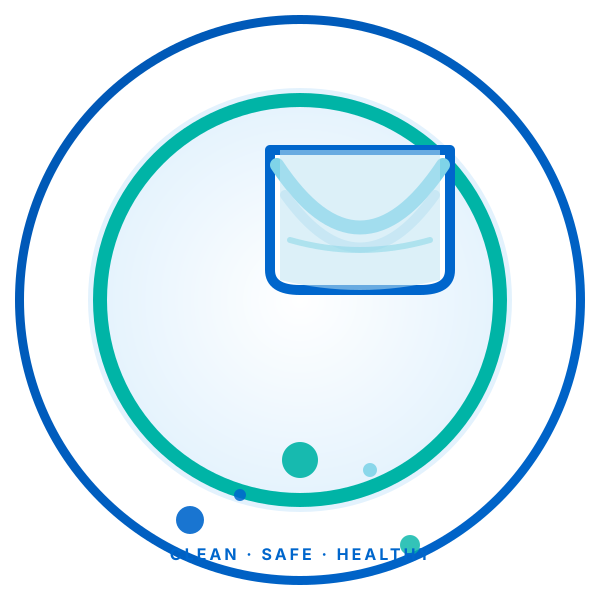

Mineral & Alkaline Water — Clean, Safe, Healthy
Your family deserves clean, safe, and healthy drinking water.Who we are
Since September 2020, Healthy Drinking Water Refilling Station has been helping families stay hydrated, balanced, and healthy — with water that is not just clean, but certified clean.
We don't sell water. We sell health, one container at a time.
Why healthy water matters
What goes into your glass goes into your cells, your blood, your brain.
Every day, stress, processed food, sugary drinks, and pollution make your body more acidic. Over time, that acid drains your energy, weakens your bones, and leaves you feeling tired and bloated.
That's why we don't just filter water. We make it healthy — mineral-rich and alkaline — so it works with your body, not against it.
The difference
Drink alkaline water to support healthy weight goals.
Filter out toxic metals that build up over time.
Fight metabolic syndrome caused by everyday acidity.
Help tackle bone loss with minerals your skeleton needs.
Tastes sweeter — so you actually drink more.
Your best natural source of magnesium.
Fight off lactic acid — recover faster, feel lighter.
Clean water keeps you alive. Healthy water keeps you thriving.
Our products
Helps flush out body toxins — fatty acids from fatty foods, sugar acid from sweetened drinks, uric acids from beans and organ meats, and citric acids. Keeps your body's pH balanced and your essential minerals — calcium, magnesium, potassium, sodium — working. Safe for all ages. Helps prevent osteoporosis.
Mineral water with a higher, body-friendly pH. Reaches deeper into cells for hydration, balances acidity, and gives your body the magnesium it needs for heart and bone health.
Drinking water containers in different colors are available for only Php 200 per piece. Prices may change without prior notice and government taxes are excluded.
How we make it
Our purifying equipment uses Micro Filtration Technology with a UV Sterilizer and a 24-level Mineral & Alkaline filtration system — producing up to 10,000 gallons per day.
Certified safe
We test our water every month with Boyer Environmental Water Testing Laboratory, a DOH-accredited lab — and we consistently PASS all parameters: physical, chemical, biological, bacteriological, and radiological, per the Philippine National Standards for Drinking-Water.
| Permit / Certificate | Status |
|---|---|
| Certificate of Potability | Issued & renewed yearly |
| Sanitary Clearance (delivery vehicle) | Displayed in plain view |
| Barangay Permit | Renewed yearly |
| Mayor's Permit | Renewed yearly |
| DTI Business Name Permit | Renewed yearly |
| Sanitary Permit | Renewed yearly |
| BIR Certificate of Registration | Active |
Government compliance isn't paperwork for us. It's proof your water is safe.
Our promise
Thank you for trusting Healthy Drinking Water Refilling Station.